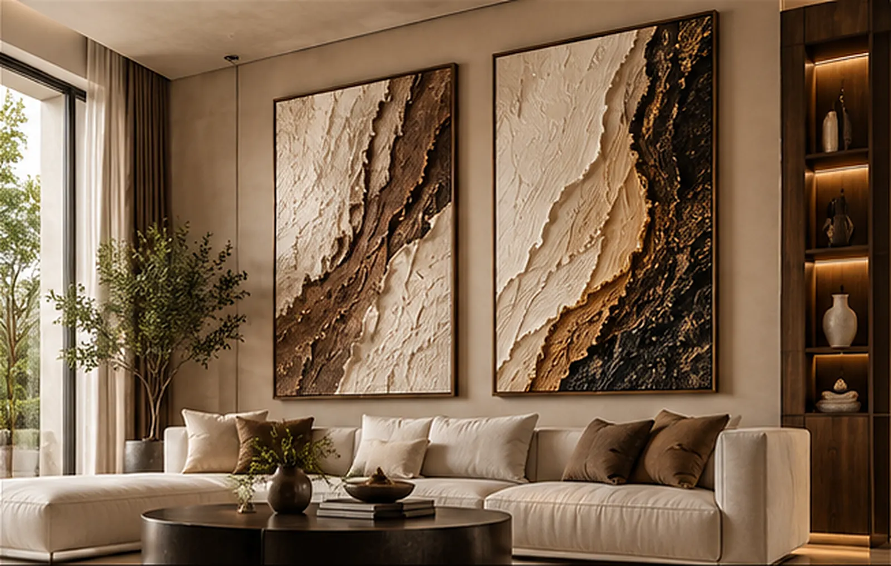

The Journal
Notes on art, space & light
Considered guidance from the studio — on choosing scale, lighting texture and collecting limited editions.

Considered guidance from the studio — on choosing scale, lighting texture and collecting limited editions.